00:00:00 Before the first slide
So he studied physics and ended up thinking we just all need a lot better understanding of quantum mechanics because he sees this theory being misused a lot by some weird esoteric theories kind of abusing it to just justify everything and anything. So he wants to change that and he wants to have people with some understanding of this very important theory. And so he will start today with all of us here and try to explain to us the wonders of quantum mechanics. Have a go! Well, thank you for the warm welcome. It will be about quantum mechanics. We will see whether the gentle introduction will be a lie, depending on how good you can follow me.
00:01:20 Slide 1
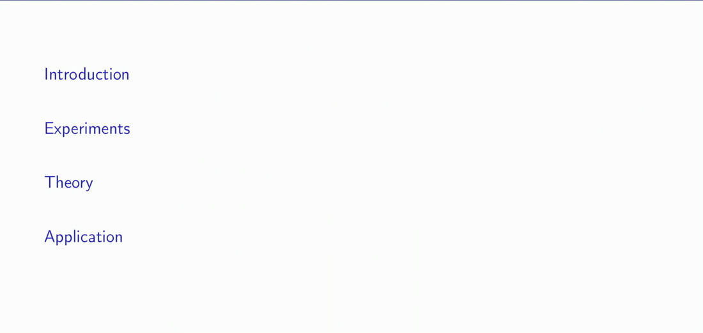
So at first there will be a short introduction, a bit meta discussion about physical theories and what is the aim of this
00:01:28 Slide 2
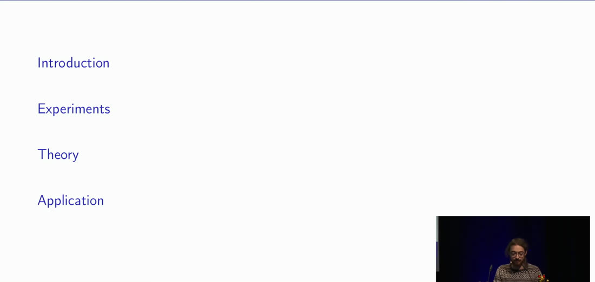
talk. And then we will discuss the experiments. Most of this is high school physics. You've probably seen it before. And then it will get ugly because we'll do the theory and we'll really do the theory. We'll write down the equations of quantum mechanics and try to make them plausible and hopefully understandable to a lot of people. And finally, some applications will be discussed. So what
00:01:56 Slide 3
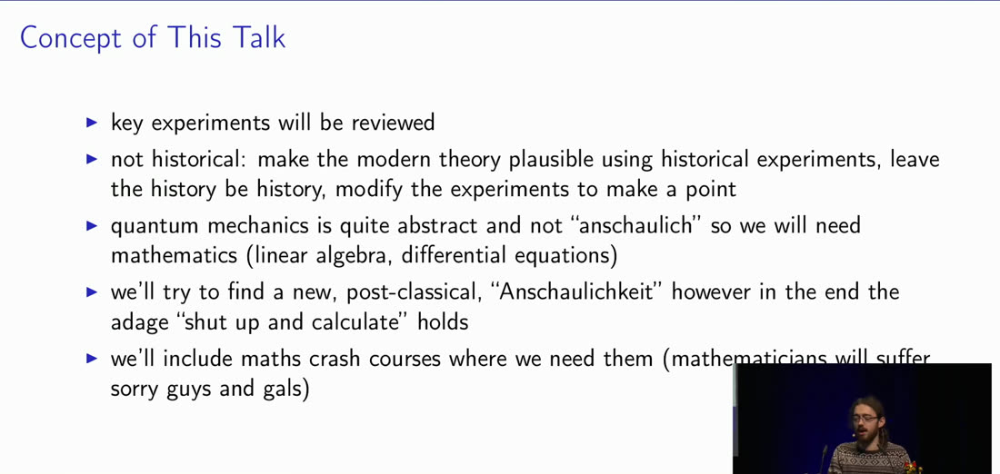
is the concept of this talk? The key
00:01:58 Slide 4
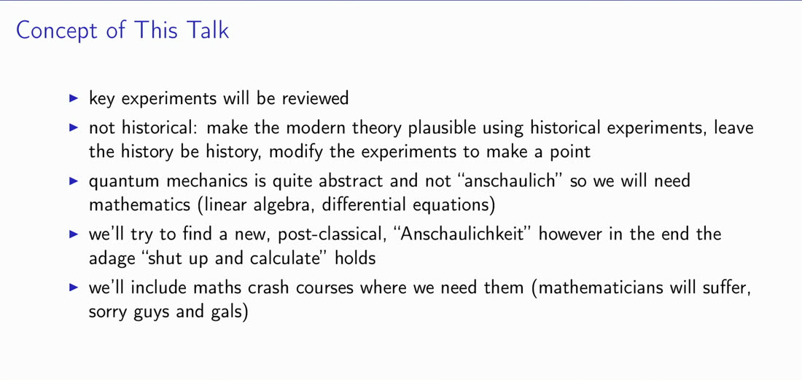
experiments will be reviewed as set, but we will not do it in historical fashion. We will look at the experiments as physical facts and derive the theory from them. And since quantum mechanics is rather abstract and not as set in German and in science theory anschaulich, we will need mathematics and most of this will be linear algebra. So a lot of quantum mechanics is just linear algebra and steroids, that means in infinite dimensions. And in doing so, we'll try to find a certain post-classical anschaulichkeit or lividness to understand the theory. Since there'll be a lot of math, as the allergy advice said, there will be crash courses strewn in to explain mathematical facts. Sorry for the mathematicians that are here. They probably suffer because I lie a lot.
00:02:58 Slide 5
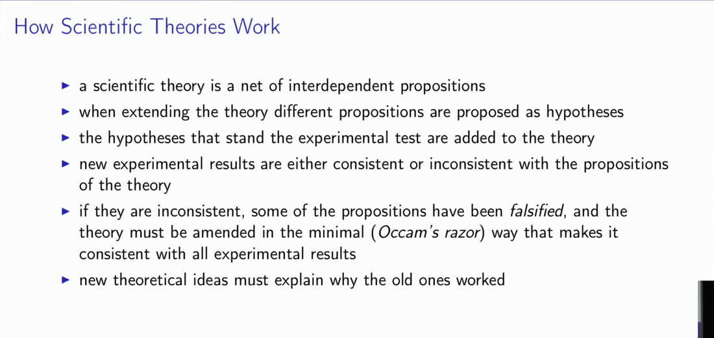
So at first, how do scientific theories work? To really understand quantum mechanics, we must understand the setting and setting where it was created and how scientific theories are created in general. A scientific theory is a net of interdependent propositions. So we have one proposition, for example, F equals m times a in classical mechanics. And we have another proposition that the gravitational force is proportional to the product of the masses divided by the distance between the masses squared. So something like this. And when we go around, make experiments, look into nature, develop theories, calculate, we test hypotheses, different hypotheses, and try to determine which one describes our experimental results best. And if the hypotheses stand the experimental tests, they're added to the theory. But what happens if there's an experimental result that totally contradicts what we've seen before? And that happened in the late 19th and early 20th century. There were new results that could not be explained. So if such inconsistent results are found, then our old theory has been falsified. This term is due to Popper who said that theory is scientific as long as it can be falsified, that is, as long as we can prove that it's not true, and we can never prove a theory true but only prove it wrong. And all that we have not yet proven wrong are at least some approximation to truth. And if this happens, we have to amend our old theory, and we have to use care there and find a minimal amendment. This principle is Occam's razor, or one could also say the principle of least surprise from software engineering. And then we try that our theory is again consistent with the experimental results. And of course, the new theory must explain why the hell that for example Newtonian mechanics work for 200 years if it's absolutely wrong. And so the old theory must in some limit contain the new one. And now
00:05:18 Slide 6
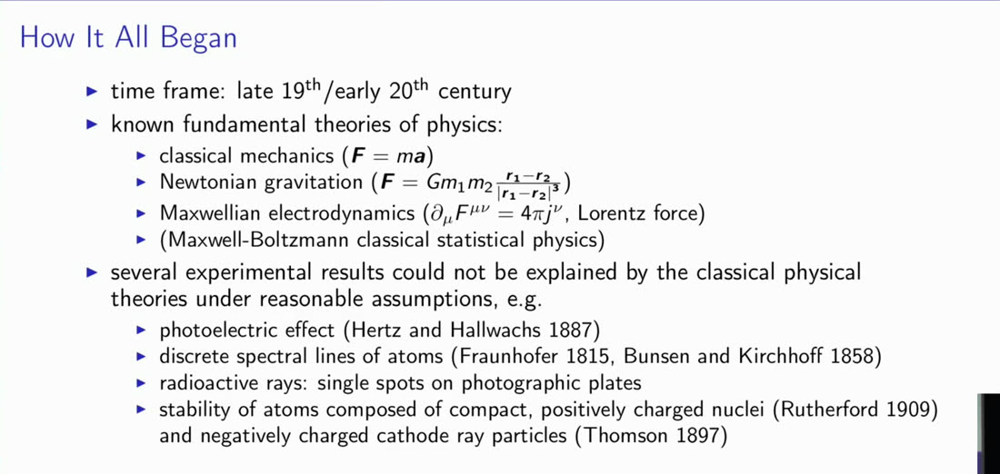
how does it begin with quantum mechanics? As already said, the time frame is the late 19th and early 20th century. And there were three or four fundamental theories of physics known then. Classical mechanics, which is just governed by the single equation the force equals the mass times the acceleration. with given forces and two known force laws. The immediate distance action, Newtonian gravitation and the Maxwell electrodynamics. This funny equation here. This funny equation here is a way of writing down the Maxwell equations that basically contain all the known electromagnetic effects. And finally, there were the beginnings of the Maxwell-Boltzmann statistical physics. but classical statistical physics is a pain. It doesn't really work. So several experimental results, as said, could not be explained by classical theories. For example, the photoelectric effect discovered by Hertz and Halewags in 1887 or the discrete spectral lines of atoms first shown by Fraunhofer in the spectrum of the sun and then studied by Bunsen and Kirchhoff with the so-called Bunsenbrenner. You all know it from your chemistry classes. And further radioactive rays were really a mystery. Nobody understood how can it happen that something just decays at random intervals. It was unclear. And then the people looked into the atom, Rutherford using alpha particles to bombard a gold foil and saw there must be positively charged nuclei. and they already knew that there were negatively charged, what we now call electrons, particles in the atom. So this, and this was really strange that atoms are stable at compost like this and I will explain why a bit later. But now to more detail to the experiments. The really big breakthrough in this time, experimentally speaking, were vacuum tubes. So you took a piece of glass and pump the air out and close it off and put all sorts of devices in there. And now one thing is this nice cathode ray experiment. We have here a so-called electron gun and this is a heated electrode. So he flows a current that heats it so that the electrons get energy and seep out into the vacuum. Then we have an electrode that goes around and a plate in front that is positively charged. So we accelerate our electrons towards the plate. There's a pinhole on the plate and we get a beam of electrons. And now we had those evacuated tubes and those electron guns. So we put an electron gun in an evacuated tube. Perhaps left a bit of gas in because then it glowed when the atoms and the gas were hit by the electrons. so we could see the cathedrae, and then we play around. We take magnetic fields and see how does it react to magnetic fields. We take electric fields, how does it react to electric fields, and so on. And what we find out is we somehow must have negatively charged particles that flow nicely around in our almost vacuum. And because atoms are neutral, which is just known macroscopically, there must be a positively charged component in the atom as well.
00:09:06 Slide 7
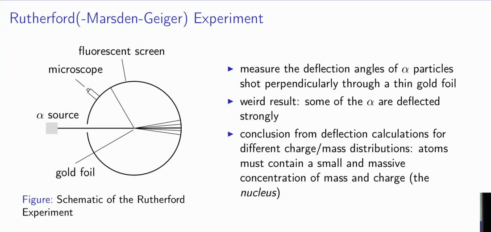
And this positively charged component was first thought to be kind of a plump having or so with the electrons sitting in there. But the Rutherford-Guyger, Marston-Guyger experiment, so it was Rutherford invented the idea and Marston and Guyger actually performed the experimental work, showed that if you have a really thin gold foil, really only a few hundred layers of atoms, that's the nice thing about gold. You can just hammer it out to really, really thin sheets. If you had that, and then shot alpha particles, that is a helium nuclei that are created by the radioactive decay of many heavy elements. For example, most uranium isotopes decay by alpha decay. Then they were deflected strongly. If the charge would have been spaced throughout the atoms, then this could not have happened. You can calculate, you can estimate the possible deflections with an extended charge and with a concentrated charge. And you see the only explanation for this is that there is a massive and really, really small positive thing in those atoms. So atoms are small positively charged nucleus, as Rutherford called it. and around it there's a cloud of electrons, or he thought orbiting electrons. But orbiting electrons,
00:10:33 Slide 8
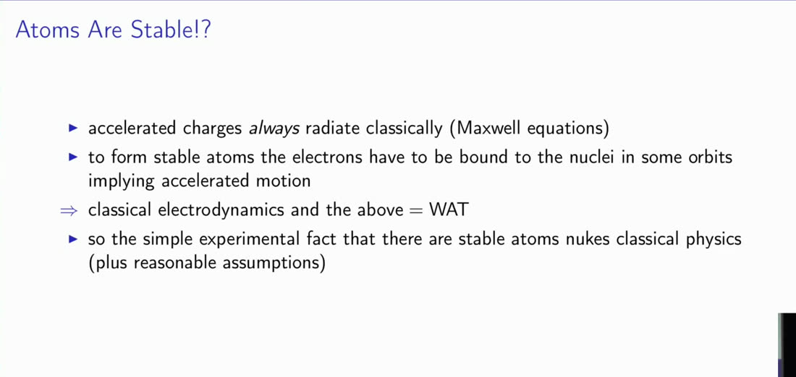
atoms are stable, this doesn't really make sense in classical physics because in classical physics all accelerated charges must radiate energy and be slowed by this process. And this means atoms that are stable and composed of some strange electrons and heavy nuclei, they're just not possible. It's a no-go. So at least at this moment it was completely clear classical physics as they knew it up until then is wrong. and the
00:11:07 Slide 9
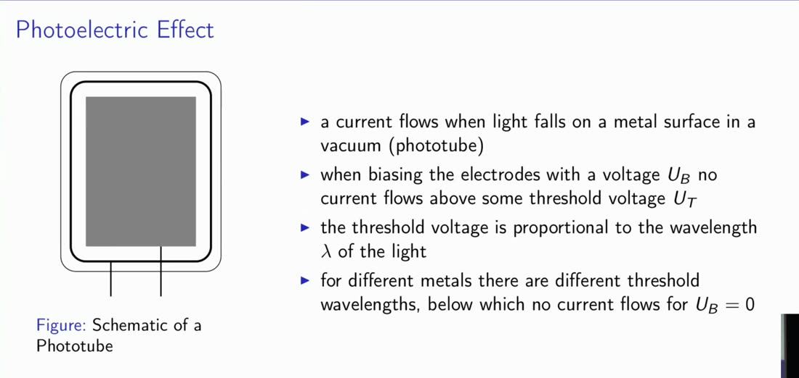
next experiment in this direction was the photoelectric effect. What's shown there is a schematic of a phototube and a phototube is again a vacuum tube out of glass and there's a, for example, cesium layer in the tube at one side and there's a ring electrode removed from it. And if we shine light on this, there flows a current. But the peculiar thing is that if we use a bias voltage across the two terminals of this tube to stop the electrons, we see that the bias voltage that completely stops the flow is not proportional to the intensity of the light that is incident onto the tube, but it's proportional to the frequency of the light that's incident on the phototube. And that was, again, really weird for the people of the time because the frequency shouldn't make any difference for the energy. And this was when Einstein thought of that there must be some kind of energy portions in the electric field from this simple experiment, which is often done in physics classes, even at the high school level. So from today's view, it's not a complicated experiment. And to go even
00:12:31 Slide 10
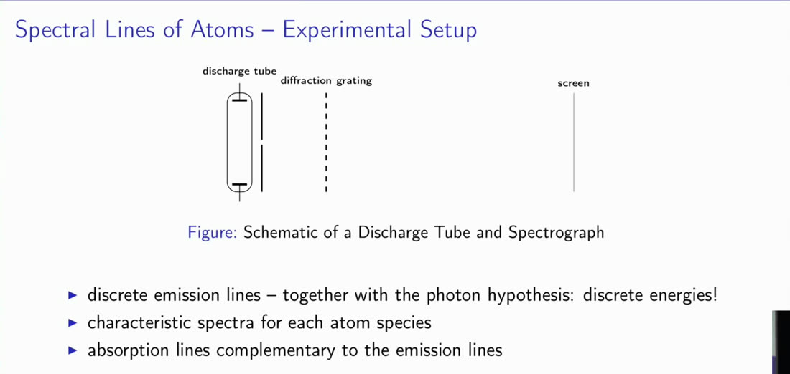
further, those weird stable atoms had discrete lines of emission and absorption of light. And here we have again a very simplified experimental setup of a so-called discharge tube where we have high voltage between the terminals and a thin gas. And then a current flow will excite the atoms. The atoms will relax and emit light. And this light will have a specific spectrum with sharp frequencies that have strong emission. And we can see this with a diffraction creating that sorts the light out according to its wavelength and then look on the screen or use some more fancy optical instrument to do precision measurements as Bunsen and Kirchhoff did. So what we knew up until now was that something was really weird and our physical theories didn't make sense. And then it got worse. Someone
00:13:31 Slide 11
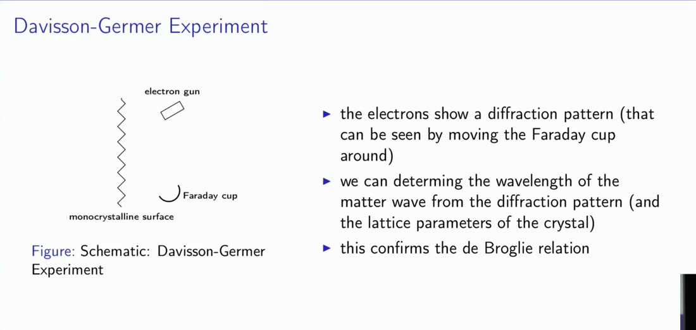
took an electron gun and pointed it at a monocrystalline surface. and such a monocrystalline surface is just like a diffraction creating a periodically arranged thing and of periodically arranged things there does happen regular interference pattern creation so they saw an interference pattern with electrons but electrons are the particles how can particles so what was thought of then since the times of newton as a little hard ball how can a little hard ball flowing around create interference patterns. It was really weird. And there's even
00:14:14 Slide 12
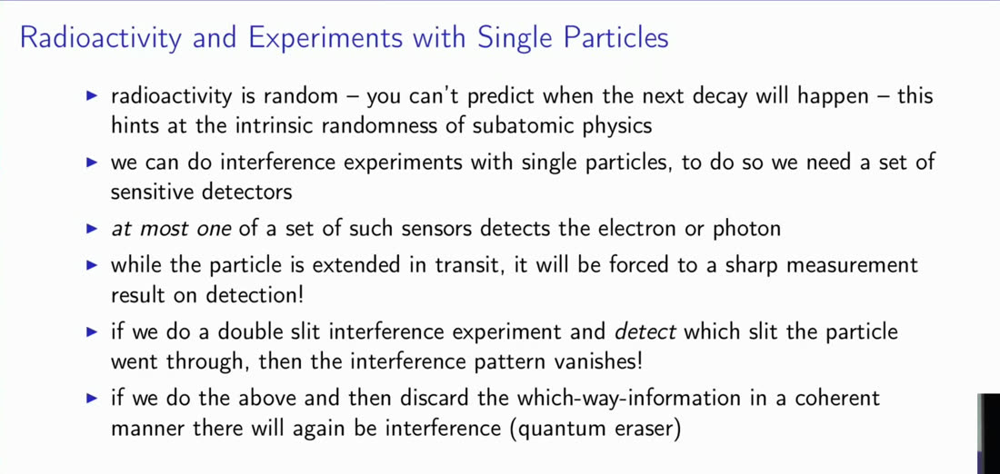
more, and as already mentioned, radioactivity with the random decay of a nucleus. This doesn't make sense in classical physics, so it was really, really bad. And here I've added some modern facts that we'll need later on, namely that if we measure, if we try to measure the position of a particle and use different position sensors to do so. Only one of them, so only at one position will the single particle register, but it will nevertheless show an interference pattern if I do this experiment with many, many electrons. So there must somehow be a strange divide between the free space propagation of particles and measuring the particles. and you can do really weird stuff and record the information through which slip the particle went and if you do this the interference pattern vanishes and then you can even destroy this information in a coherent manner and the coherence and the interference pattern appears again so what we know up until now is that quantum mechanics is really really weird and really different from classical mechanics. And now that we've talked about those experiments, we'll begin with the theory, and the theory will begin with a lot of mathematics. The first one is simple, complex
00:15:44 Slide 13
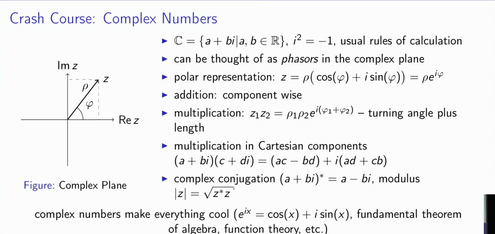
numbers. Who doesn't know complex
00:15:49 Slide 14
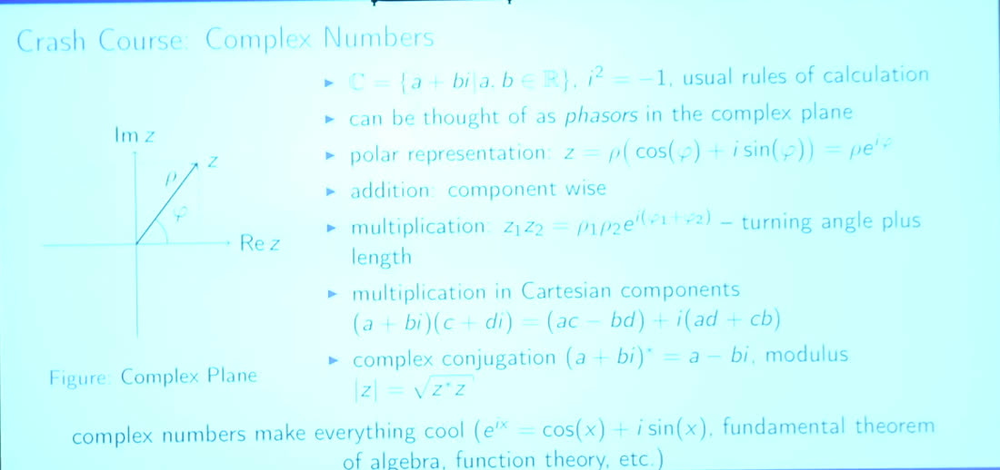
numbers? Okay, sorry, I'll have to ignore you for the sake of getting to the next points. So, I'll just say complex numbers are two component objects with real numbers and one of them is multiplied by an imaginary number i and if I square the number i it gets minus one. And this makes many things really beautiful. For example, all algebraic equations have exactly the number of degree solutions in complex numbers and if you count them correctly. and if you work with complex functions, it's really beautiful. A function that once differentiable is infinitely many times differentiable and it's nice. So now we had complex numbers. You've all said you know them. So we go on to vector spaces, which probably also a lot of you know. Just
00:16:51 Slide 15
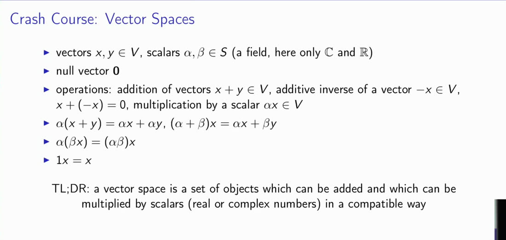
to revisit it, a vector space is a space of objects called vectors above some scalars that must be a field. and here we only use complex numbers as the underlying fields. There's a null vector, we can add vectors, we can invert vectors, and we can multiply vectors by real numbers. So we can say 3.5 times this vector and just scale the arrow. And these operations interact nicely so that we have those distributive laws. And now it gets interesting. Even more maths. L2 spaces. L2
00:17:30 Slide 16
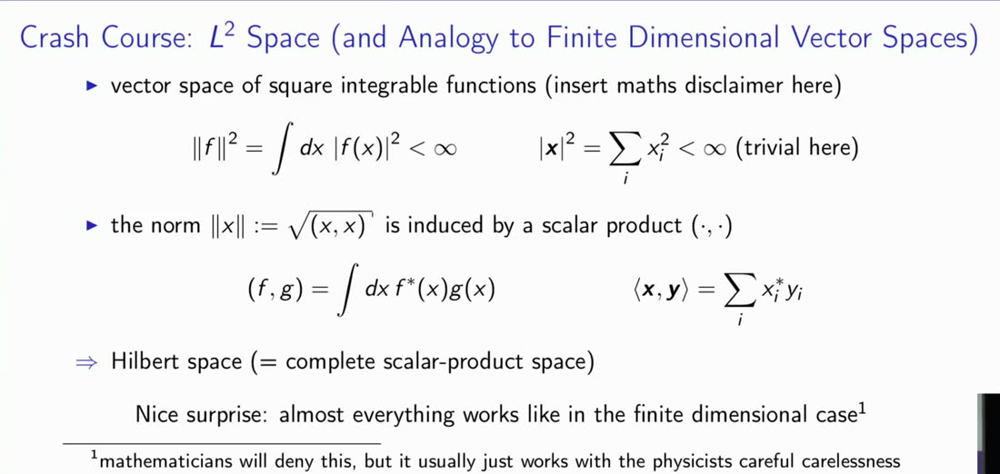
spaces are in a way an infinite dimensional or one form of an infinite dimensional extension of vector spaces. Instead of having just three directions x, y, z, we have directions at each point of a function. So we have an analogy here. We have vectors which have three discrete components given by x index i on the right side and we have this function and each component is the value of the function at one point along the axis x and then we can just as for vectors define a norm on those L2 functions which is just the integral over the absolute value squared of this function f. And the nice thing about this choice of norm, there are other choices of the norm, this norm is induced by a scalar product and this little asterisk that is there at the F denotes the complex conjugate so flipping I to minus I in all complex values. And if you just plug in F and F into the scalar product you will see that it's the integral over the squared absolute value. And this space, this L2 space is a Hilbert space. And the Hilbert space is a complete vector space with a scalar product where complete means that... It's mathematical nonsense, forget it. So but the nice surprise is that most things carry over from finite dimensional spaces. What we know from finite dimensional spaces is we can always diagonalize matrices with certain properties and this all more or less works. The mathematicians really, really, really do a lot of work for this, but for physicists we just know when to be careful and how and don't care about it otherwise, so it just works for us. And that's nice. And now that we have those complex numbers, we can begin to discuss how particles are modeled in quantum mechanics. And as we know from the Davison
00:19:45 Slide 17
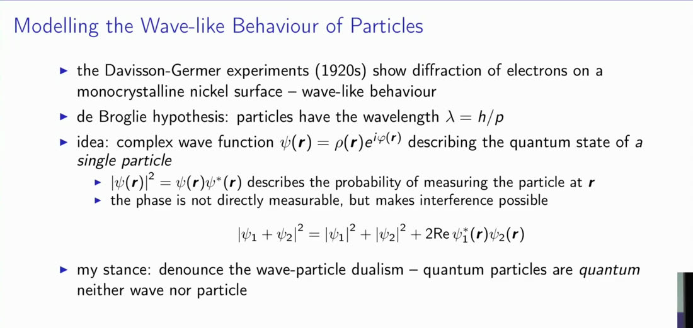
-Germa experiments, there's diffraction of electrons, but there's nothing in electrons that corresponds to an electric field in some direction or so. Some other periodicity has, so periodicity of electrons during propagation has never been directly observed. And de Broglie said particles have a wavelength that's related to their momentum and he was motivated primarily by the Bohr theory of the atom to do so. and he was shown right by the Davison-German experiment so his relation for the wavelength of a particle is older than the experiments showing this which is impressive I think. And now the idea is to have a complex wave function and let the squared absolute value of the wave function describe the probability density of a particle. So we make particles extended but probability measured objects so there is no longer the position of the particle, as long as we don't measure, but we have just some description of a probability where the particle is. And by making it complex, we have a phase, and this phase can still allow interference effects, which we need for explaining the interference peaks in the Davison-German experiment. And now a lot of textbooks say here, there's a wave-particle dualism, blah, blah, blah, distinct nonsense, blah. The point is it doesn't get you far to think about quantum objects as either wave or particle. They're just quantum, neither wave nor particle. It doesn't help you either, but it doesn't confuse you as much as when you try to think about particles as waves or particles. About quantum particles as waves or particles. and now that we say we have a complex wave function what about simply
00:21:41 Slide 18
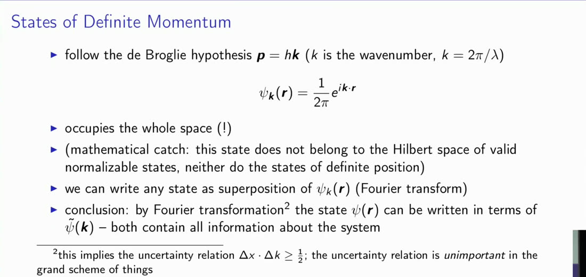
using a plane wave with constant probability as the states of definite momentum because we somehow have to describe a particle that has a certain momentum and we do this. Those have the little problem that they are not in the Hilbert space because they are not normalizable. The absolute value of psi is 1 over 2 pi everywhere so that's bad. But we can write the superposition of any state by Fourier transformation. those e to the i k dot r states are just the basis states of a Fourier transformation. We can write any function in terms of this basis. And we can conclude that by Fourier transformation of the state psi of r to some state tilde psi of k, we describe the same information because we know we can invert the Fourier transformation. And also this implies the uncertainty relation. and because this is simply property of Fourier transformations that either the function can be very concentrated in position space or in momentum space. And now that we have states of definite momentum and the other big ingredient in quantum mechanics are operators
00:23:02 Slide 19
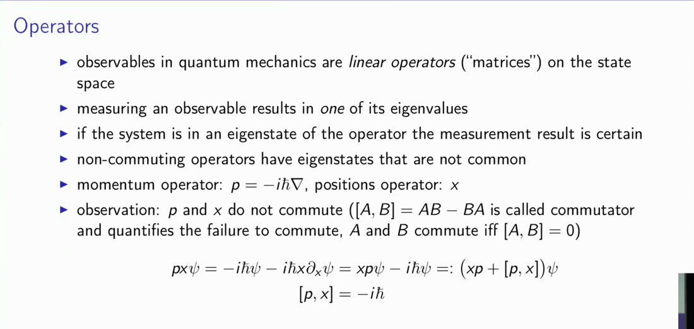
next to the state description. And operators are just like matrices, linear operators on the state space just as we can apply a linear operator in the form of a matrix to a vector, we can apply linear operators to L2 functions. And when we measure an observable, it will be that it's one of the eigenvalues of this operator that's the measurement value. You know, so eigenvalues are those values where a matrix does just, if a matrix just scales a vector by a certain amount, that is an eigenvector of the eigenvalue of the matrix. And in the same sense, we can define eigenvalues and eigenvectors for L2 functions. And there are some facts such as that non-commuting operators have eigenstates that are not common, so we can't have a description of the basis of the state space in terms of functions that are both eigenfunctions of both operators. And some examples of operators are the momentum operator, which is just minus ih bar Napler, which is the derivation operator in three dimensions. So in the x component, we have derivation in the direction of x and the y component in the direction of y and so on. And the position operator, which is just the operator that multiplies by the position x in the position space representation of the wave function. And as for the non-commutativity of operators, we can already show that those P and X are operators that do not commute, but fulfill a certain commutation relation. And the commutation relation is just a measure for how much two operators do not commute. And the commutators AB minus BA for the objects AB. So if they commute, if AB equals BA, the commutator simply vanishes. and
00:25:13 Slide 20
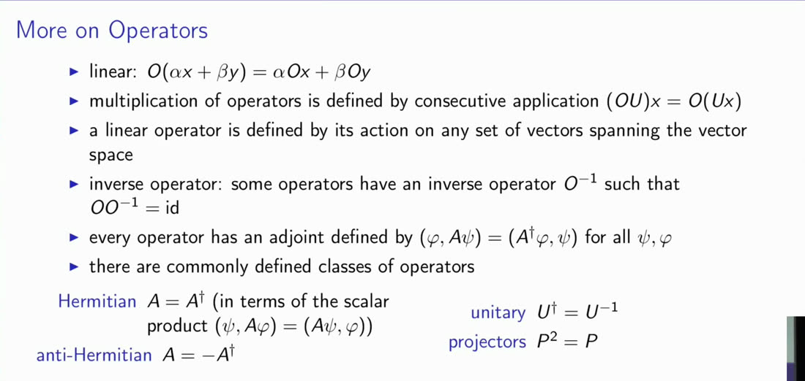
there's more on operators just to make it clear linear just means that we can split the argument if it's just some linear combinations of vectors and apply the operator to the individual vectors occurring we can define multiplication of operators and this just exactly follows the template that is laid down by finite dimensional linear algebra there's there's nothing new here. And there are inverse operators for some operators, not for all of them, that give the identity operator if it's multiplied with the original operator. And further, there's the so-called adjoint. Our scalar product had this little asterisk, and this means that it's not linear in the first component. If I scale the first component by some complex number alpha, the total scalar product is not scaled by alpha, but by the complex conjugate of alpha. This kind of not quite bilinearity is sometimes called sesquilinearity, a seldom used word. And they are commonly defined classes of operators in terms of how the adjoint that is defined, their acts and how some, their operators, for example, where the adjoint is the inverse, which is a generalization from the fact that for rotation operators in normal Euclidean space, the transpose is the inverse. And now that we have operators,
00:26:50 Slide 21
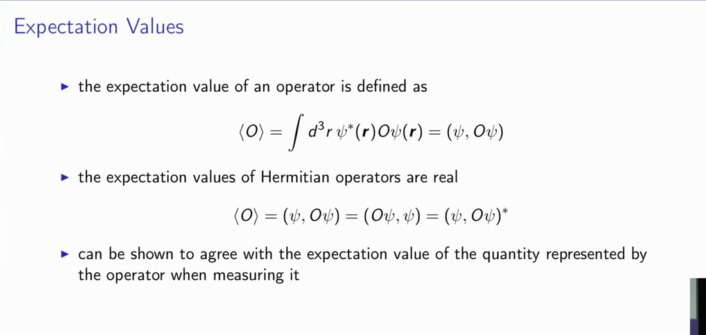
we can define expectation values just by some formula. For now, we don't know what those expectation values are, but we can assume it has something to do with the measurement values of the operator because why else would I tell you about it? And later on, we will show that this is actually the expectation value of the quantity if we prepare a system always in the same fashion and then do measurements on it, we get random results each time. But the expectation value will be this combination. And now again, a bit of mathematics, eigenvalue problems. Well known, you can diagonalize metrics and you can diagonalize linear operators. You have some equation, A psi equals lambda psi, where lambda is just a scalar. so and if such an equation holds for some vector psi then it's an eigenvector and any linear scale if we scale the vector linearly this will again be an eigenvector and what can happen is that to one eigen value there are several eigenvectors not only one ray of eigenvectors but a higher dimensional subspace and important to know is that so-called hermitian operators that is those that equal their joint which again means that the eigenvalues equal the complex conjugate of the eigenvalues have real eigenvalues because of a complex number equals its complex conjugate then it's a real number and the
00:28:31 Slide 22
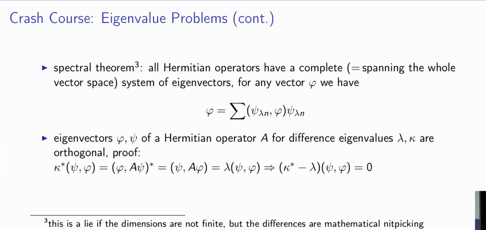
nice thing about those diagonalized matrices and all is we can develop any any vector in terms of the eigenbasis of the operator. Again just like in linear algebra where when you diagonalize a matrix you get a new basis for your vector space and now you can express all vectors in that new basis and if the operator is a mission the eigenvectors have a nice property namely they are orthogonal if the eigenvalues are different and this is good because because this guarantees us that we can choose an orthonormal that is a basis in the vector space where two basis vectors always have vanishing scalar product are orthogonal and are normal that is we scale them to length one because we want our probability interpretation and in our probability interpretation we need to have normalized vectors. So now we have that and now we want to know how does the strange function psi that describes the state of the system evolve in time.
00:29:45 Slide 23
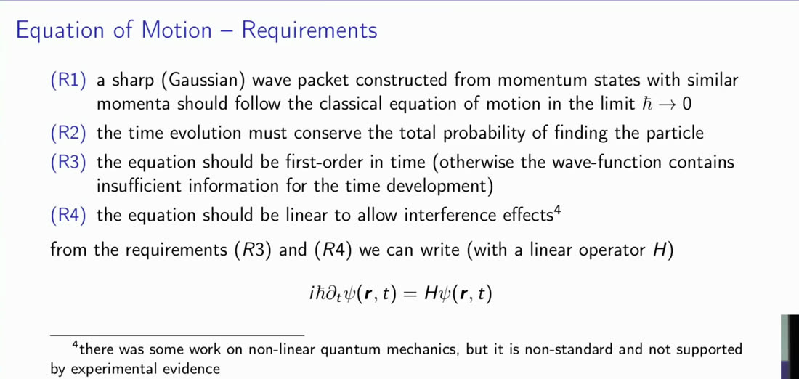
And for this, we can have several requirements that it must fulfill. So again, we are close to software engineering. And one requirement is that if it's a sharp wave packet, so if we have a localized state that is not smeared around the whole space, then it should follow the classical equation of motion because we want that our new theory contains our old theory. and the time evolution must conserve the total probability of finding the particle because otherwise we couldn't do probability interpretation of our wave function if the total probability of the particle wouldn't remain one. Further, we wish the equation to be first order in time and to be linear because, for example, the Maxwell equations are linear and show nice interference effects. so we want that because then simply sum of solutions is again a solution. It's a good property to have and if it works that way, why not? And the third and the fourth requirement together already give us more or less the form of the Schrödinger equation because linearity just says that the right-hand side is some linear operator applied to psi and the first order in time just means that there must be a single time derivative in the equation on the left-hand side. And this IH bar is just, we just wanted that there. No particular reason we could have done this differently, but it's convention. Now with this equation, we can look what must happen for the probability to be conserved. and
00:31:33 Slide 24
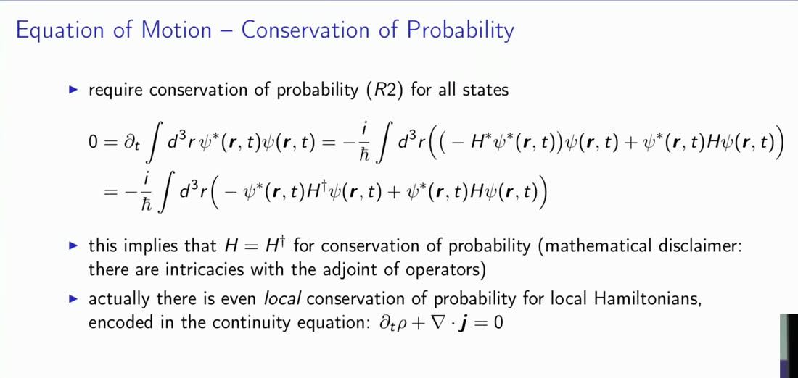
by a simple calculation we can show that it must be Hermitian operator and there's even more than this global argument there's local conservation of probability that is a particle can't simply vanish here and appear there but it must flow from one point to the other with local operations. This can be shown when you consider this in more detail. Now we know how this equation of motion looks like but we don't know what this mysterious object H might be and this mysterious object H is
00:32:13 Slide 25
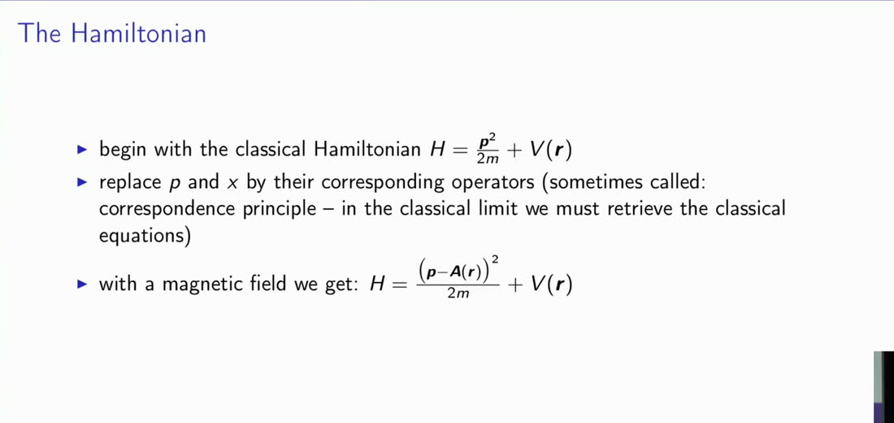
the operator of the energy of the system which is from known from classical mechanics as the Hamilton function and which we here upgrade to a Hamilton operator by using the formula for the classical Hamilton function and inserting our P and R operators and we can also extend this to a magnetic field. and by doing so we can show that our theory is more or less consistent with Newtonian mechanics we can show the Ehrenfest theorem that's the first equation and then those equations are almost Newton's equation of motion for the centers of mass of the particle because this is the expectation value of the momentum this is the expectation value of the position of the particle this just looks exactly like the classical equation the velocity is the momentum divided by the mass but this is weird here we average over the force so the gradient of the potential is the force we average over the force and do not take the force at the center position so we can't in general solve this equation But again, if we have a sharply defined wave packet, we recover the classical equations of motion, which is nice. So we have shown our new theory does indeed explain why our old theory worked. We only still have to explain why the centers of mass of massive particles are usually well localized. And that's a question we're still having trouble with today. But since it otherwise works, don't worry too much about it. and now you probably want to know how to solve the Schrödinger equation or you
00:34:12 Slide 26
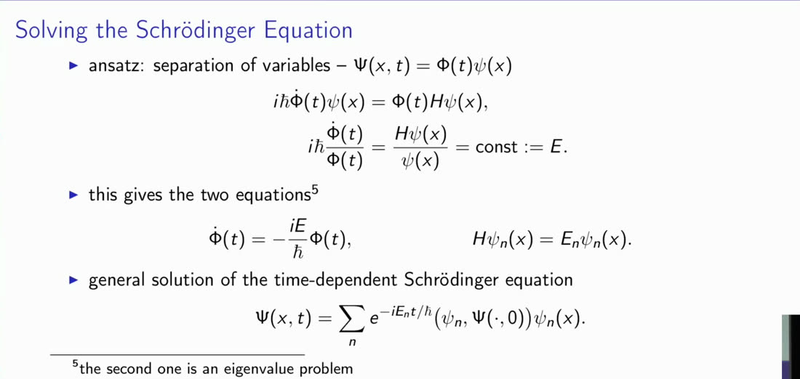
don't want to know anything more about quantum mechanics and to do this we make a so-called separation ansatz where we say we have a form stable part of our wave function multiplied by some time dependent part and if we do this we can write down the general solution for the Schrödinger equation because we already know that the one equation that we get is an eigenvalue equation or an eigenvector equation for the energy eigenvalues, that is the eigenvalues of the Hamilton operator. And we know that we can develop any function in terms of those. And so the general solution must be of the form shown here. And those states of specific energy have a simple evolution because their form is constant and only their phase changes and depends on the energy. And
00:35:06 Slide 27
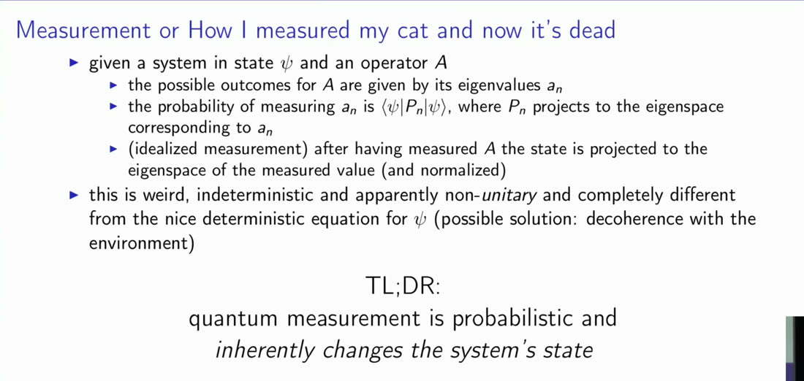
now this thing with the measurement and quantum mechanics is bad. You probably know Schrödinger's cat. And the point is that you don't know whether the cat's dead or alive while you don't look inside the box. As long as you don't measure it's in a superposition or something. So you measure your cat and then it's dead. It isn't dead before. Only by measuring it, you kill it. And that's really not nice to kill cats. We like cats. So and the important part here is the TLDR. quantum measurement is probabilistic and inherently changes the system's state.
00:35:41 Slide 28
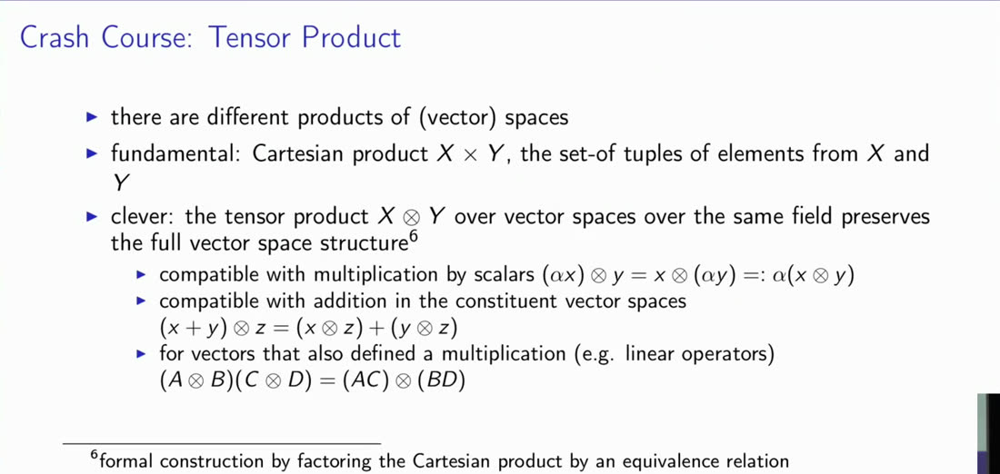
So I'll skip the multi
00:35:43 Slide 29
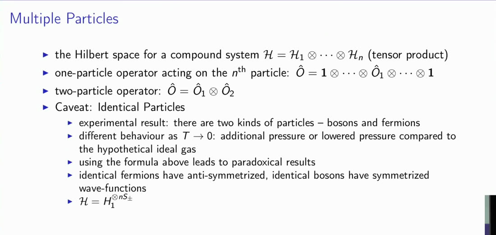
-particle things. We can describe
00:35:46 Slide 30
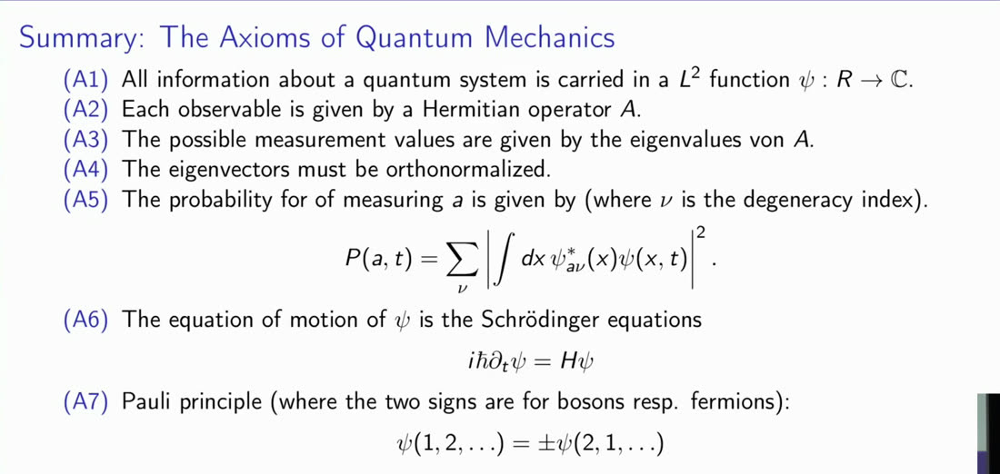
multiple particles and just show the axioms of quantum mechanics shortly. Don't read them too detailed, but this is just a summary of what we've discussed so far. And the thing about the multiple particles is the axiom 7, which says that the sign of the wave function must change if we exchange the coordinates of identical fermions. And this makes atoms stable, by the way. Without this, atoms as we know them would not exist. And finally, there's
00:36:21 Slide 31
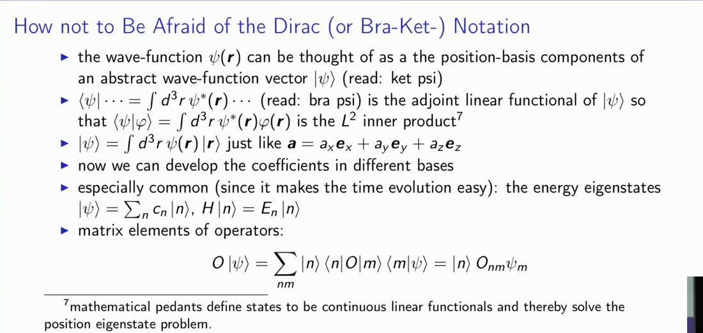
a notational convention in quantum mechanics called bracket notation. And in bracket notation, you label states by their eigenvalues and just think about such a ket as an abstract vector such as x with a vector arrow over it or a fat set x is an abstract vector and we can either represent it by its coordinates x1 x2 x3 or we can work with the abstract vector and this cat is such an abstract vector for the l2 function psi of r and then we can also define the adjoint of this which gives us if we multiply the joint at the function the scalar product so this is a really nice and compact notation for many physics problems and the last equation there just looks like component wise like working with components of matrices which is because it's nothing else this is just matrix calculus in a new close. Now for the
00:37:32 Slide 32
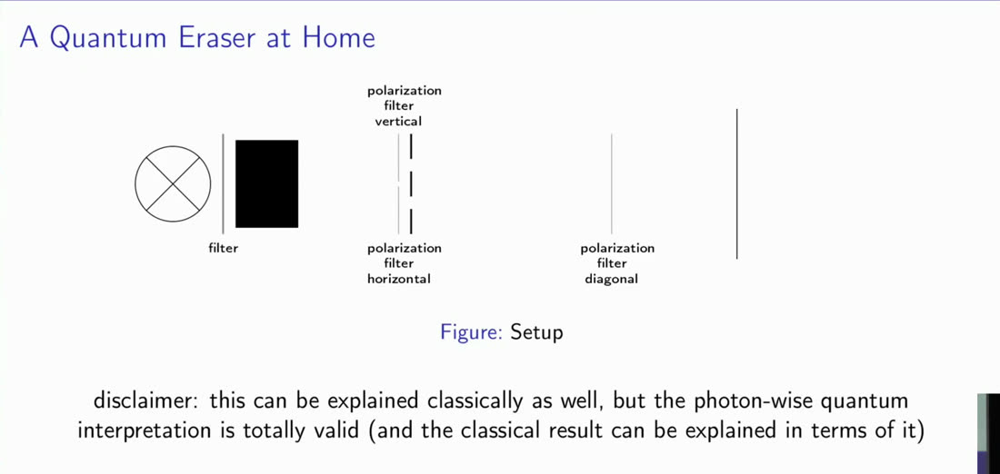
applications the first one is quite funny. oh there's a slide missing okay the first one is a quantum eraser at home because if you encode the which way information into a double slit experiment you lose your you lose your interference pattern and we do this by using a vertical and a horizontal polarization filter and you know from classical physics then it won't make an interference pattern.
00:38:11 Slide 33
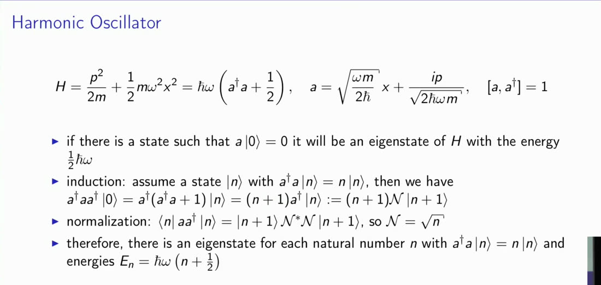
And if we then
00:38:15 Slide 32
add the diagonal polarization filter then the interference pattern will appear again.
00:38:24 Slide 33
So now just so you've seen it the harmonic oscillator can be exactly solved in quantum mechanics. If you can solve the harmonic oscillator in any kind of physics then you're good then and then you'll get through the exams in the study physics. So the harmonic oscillators is solved by introducing so-called destroyers and creation and destroyer operators. And then we can determine the ground state function in a much simpler manner than if we had to solve the Schrodinger equation explicitly for all those cases.
00:38:59 Slide 34
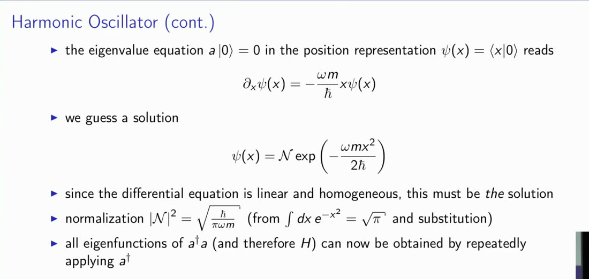
And we can determine the ground state function, so the function of lowest energy. this can all be done and then from it by applying the creation operator create the higher eigenstates of the system and get all of them. Then there's this effect of tunneling that you've probably heard about and this just means that in quantum mechanics a potential barrier that is too high for the particle to penetrate does not mean that the particle doesn't penetrate at all but just that the probability of finding the particle inside the barrier decays exponentially and this can for example be understood in terms of this uncertainty relation because if we try to compress the particle to a smaller part of the boundary layer then its momentum has to be high so it can reach farther in because then it has more energy. And there's this myth that tunneling makes particles to travel instantaneously from A to B and even some real physicists believe it but sorry it's not true. the particle status extended anyway and to defining how fast the particle travels is actually not a well-defined thing in deep quantum regimes. And also the Schrödinger equation is not relativistic so there's really nothing stopping your particle from flying around with 30 times the speed of light. It's just not in the theory. Another important
00:40:33 Slide 35
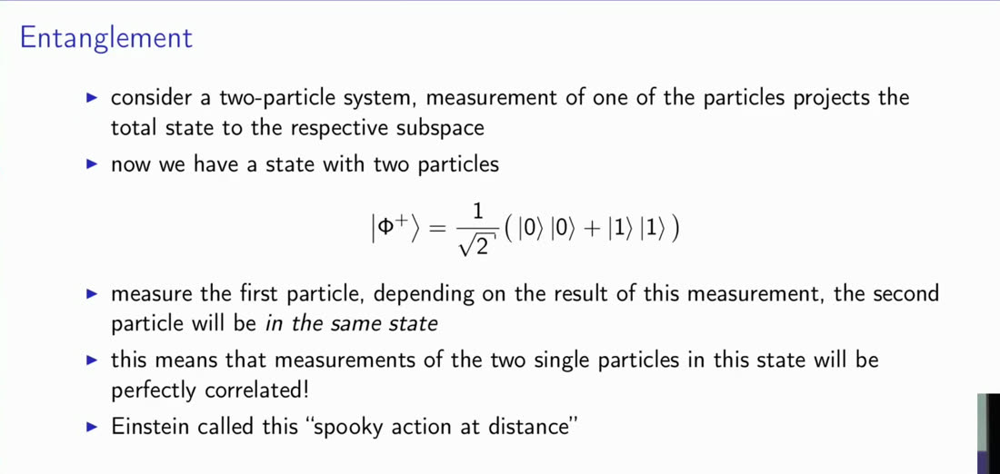
consequence of quantum mechanics is so-called entanglement. And this is a really weird one because it shows that the universe that we live in is in a way non-local, inherently non-local. Because we can create a state for some internal degrees of freedom of two atoms and move them apart, then measure the one system and the measurement result in the one system will determine the measurement result in the other system, no matter how far removed they are from each other. and this was first discovered in a paper by Einstein, Podolski and Rosen and they thought it was an argument that quantum mechanics is absurd, this can't be true, but sorry, it is true. So this works and this kind of state that we've written there, that is such an entangled state of two particles. But important to remark is that there are no hidden variables, that means the measurement result is not determined beforehand. It is only when we measure that it's actually known what the result will be. This is utterly weird, but one can prove this experimentally. Those are Bell tests. There's a Bell inequality that's a limit for theories where there are hidden variables, and it's by real experiments they violate this inequality and they may show that there are no hidden variables. And there's a myth surrounding entanglement, namely that you can transfer information with it between two sides instantaneously. But again, there's nothing hindering you in non-relativistic quantum mechanics to distribute information arbitrarily fast. It doesn't have a speed limit, but you also can't communicate with those entangled pairs of particles. You can just create correlated noise at two ends, which is what quantum cryptography is using. So now, because this is the Hackers' Congress, some short remarks and probably inintelligible due to their strong compression about quantum information. A qubit, the fundamental unit of quantum information,
00:42:46 Slide 36
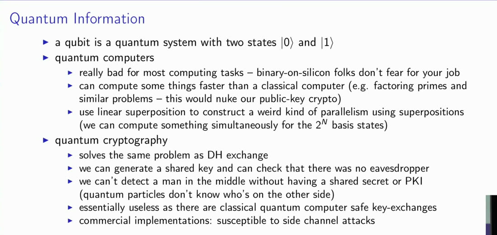
is a system with two states, zero and one, so just like a bit. But now we allow arbitrary superpositions of those states because that is what quantum mechanics allows. We can always superimpose states. And quantum Quantum computers are really bad for most computing tasks because they have to have, even if they build quantum computers, they'll never be as capable as the state-of-the-art silicon electrical computers. So don't fear for your jobs because of quantum computers. But the problem is they can compute some things faster, for example factoring primes and working with some elliptic curve algorithms and so on. determining discrete logarithms so our public key crypto would be destroyed by them. And this all works by using the superposition to construct some kind of weird parallelism. So it's actually I think nobody really can imagine how it works but we can compute it which is often the case in quantum mechanics. And then there's quantum cryptography and that fundamentally solves the same problem as a Diffie-Hellman key exchange. we can generate a shared key, and we can check by the statistics of our measured values that there was no eavesdropper, which is cool, actually. But it's also quite useless because we can't detect the man in the middle. How should the quantum particle nose of the other side is the one that we want to talk to? We still need some shared secret or public key infrastructure, whatever, so it doesn't solve a problem that we don't have solved. and then the fun fact about this is that all the commercial implementations of quantum cryptography were susceptible to side channel attacks for example you could just shine with the light in the fiber that was used read out the polarization filter state that they used and then you could you could mimic the other side so that's not good either so finally
00:44:48 Slide 37
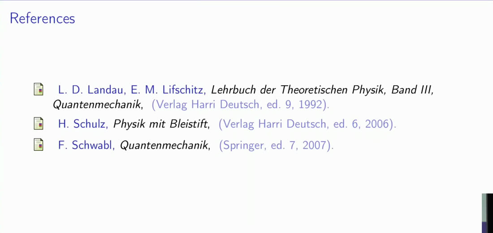
some references for further study. The first one is really difficult. Only try this if you've read the other two. But the second one, sorry that they're in German, the first and the last are also available in translation, but the second one has a really really nice and accessible introduction in the last few pages. So it's just 20 pages and it's really good and understandable. So if you can get your hands on the books and are really interested, read it. So thank you for your attention and I'll be answering your questions next. Thank you, Sebastian. Do we have questions? And don't be afraid to sound naive or anything. I'm sure if you didn't understand something, many other people will thank you for a good question. As to understanding things in quantum mechanics, Feynman said you can't understand quantum mechanics. You can just accept it. There's nothing to understand there. It's just too weird. Okay, we found some questions, so microphone one please. You measure a system, it looks like you changed the state of the system. How is it defined where the system starts, or no, how is it defined where the system ends and the measurement system begins? Or in other words, why does the universe have a state? Is there somewhere out there who measures the universe? No, there's at least the beginning of a solution by now, which is called decoherence, and which says that this measurement structure that we observe is not inherent in quantum mechanics, but comes from the interaction with the environment, and we don't care for the states of the environment. And if we do this, the technical term is trace out the states of the environment, then the remaining state of the measurement apparatus and the system we're interested in will be just classically randomized states. So it's rather a consequence of the complex dynamics of a system state and environment in quantum mechanics. But this is really the burning question. We don't really know. We know decoherence makes it nice and looks good, but it also doesn't answer the question finally. and this is what all those discussions about interpretations of quantum mechanics are about how shall we make sense of this weird measurement process okay microphone four in the back please could you comment on your point in the theory section i'm i don't understand what you were trying to to do did you want to show that you cannot understand really quantum mechanics without the mathematics or well yes you can't understand quantum mechanics without the mathematics and my point to show was that the make matter or at least my hope to show was that the mathematics is halfway accessible so probably not understandable after just exposure of a short talk but just to give an introduction where to look okay so you were trying to combat esoterics to and and say they don't really understand the theory because they don't understand the mathematics. I understand the mathematics. I'm just interested in what you were trying to say. I was just trying to present the theory. That was my aim. Thank you. Okay, microphone two, please. Hi. So I know the answer to this question is that... Can you go a little bit closer to the microphone, maybe move it up, please? So I know the answer to this question is that atoms behave randomly but could you provide an argument why they behave randomly and it's not the case that we don't have a model that's... So are atoms behaving randomly or is it the case that we don't have a model accurate enough to predict the way they behave? Radioactive decay is just as random as quantum measurement. And since if we were to look at the whole story and look at the coherent evolution of the whole system, we would have to include the environment. And the problem is that the state space that we have to consider grows exponentially. That's the point of quantum mechanics. If I have two particles, I have a two-dimensional space. If I have ten particles, I have a 1024-dimensional space. and that's only talking about non-interacting particles. So things explode in quantum mechanics in large systems and therefore I would go so far as to say that it's objectively impossible to determine radioactive decay. Although there are things, there is I think one experimentally confirmed method of letting an atom decay on purpose. This involves a metastable state of nuclei nuclei and then you can do something like spontaneous emission in a laser. You shine a strong gamma source by it and this shortens the lifespan of the nucleus, but other than that... So in a completely hypothetical case, if you know all the starting conditions and what happens afterwards, you would be able to... well you could say it's deterministic. I mean... I know I'm playing with heavy words here, but... is just that we say it's random because it's very, very complex, right? That's what I'm understanding. Maybe think about that question one more time, and we have the signal angel in between, and then you can maybe come back. Hi. Signal angel, do you have questions from the internet? There's one question from the internet, which is the ground state of BEH2 has been just calculated using a quantum eigensolver. So, is there still some use of quantum computing in quantum mechanics? Yes, definitely. One of the main motivations for inventing quantum computers was quantum simulators. Feynman invented this kind of quantum computing and he showed that with a digital quantum computer, you can efficiently simulate quantum systems, while you can't simulate quantum systems with a classical computer because of this problem of the exploding dimensions of the Hilbert space that you have to consider. And for this, quantum computers are really, really useful and will be used once they work, which is a question when it will be, perhaps never, beyond two or three qubits or 20 or 100 qubits, but you need scalability for a real quantum computer. But quantum simulation is a real thing, and it's a good thing, and we need it. Okay, then we have microphone one again. So in the very beginning you said that theory is a set of interdependent propositions, right? And then if a new hypothesis is made, it can be confirmed by an experiment. It can't be confirmed, but it, well, it's a philosophical question, but the common stance is it can be made probable but not be confirmed because we can never absolutely be sure that there won't be some new experiment that shows that the hypothesis is wrong. Because the slide said that the experiment confirms... Yeah, confirm in the sense that it doesn't disconfirm it. So it makes probable that it's a good explanation of reality. And that's the point. Physics is just models. We don't get nothing about the ontology that is about the actual being of the world out of physics. We just get models to describe the world, but all what I say about this wave function and what we say about elementary particles, we can't say they are in the sense that you and I are here and exist because we can't see them, we can't access them directly, we can only use them as description tools. But this is my personal position on philosophy of science, so there are people who disagree. Okay, thanks. Microphone two, please. Or maybe superposition, by the way. So on the matter of the collapsing of the wave function, so this was already treated on the interpretation of Copenhagen, and then, as you mentioned, it was expanded by the concept of decoherence. And is this, so the decoherence is including also the Girardi-Rimini-Weber interpretation or not? Could decoherence be used in computation? No, no, so for the Girardi-Rimini-Webba interpretation of the collapsing of the wave function. That's one that I don't know. I'm not so much into interpretations. I actually think that... There's interesting work done there, but I think they're a bit irrelevant because in the end, what I just said, I don't think we can derive ontological value from our physical theories. And in this belief, I think that the interpretations are in a sense void. They just help us to rationalize what we're doing, but they don't really add something to the theory as long as they don't change what can be measured. Okay. Popper approach. Thanks. Sorry for being an extremist. Totally fine. Someone just left from microphone one. I don't know if they want to come back. I don't see any more questions. Does the signal angel have anything else? Ah, there's some more. Signal angel, do you have something? No. Okay, then we have microphone four. I wanted to ask maybe a noob question. I want to know, are there probabilities of quantum mechanics an inherent part of nature? Or maybe in some future we'll have a science that will determine all these values exactly? Well, if decoherence theory is true, then quantum mechanics is absolutely deterministic. So, let's say, Everett says that all those possible measurement outcomes do happen, and the whole state of the system is in a superposition and by looking at our measurement device and seeing some value, we in a way select one strand of those superpositions and live in this of the many worlds. And in this sense, everything happens deterministically, but we just can't access any other values. So I think it's for now rather a matter of philosophy than of science. I see, thanks. Anything else? I don't see any people either but microphones, so last chance to run up now, I think. Well then, I think we're closing this and have a nice applause again for Sebastian. Thank
00:56:49 Slide 14
you and I hope I didn't create more fear of quantum mechanics than I dispersed.